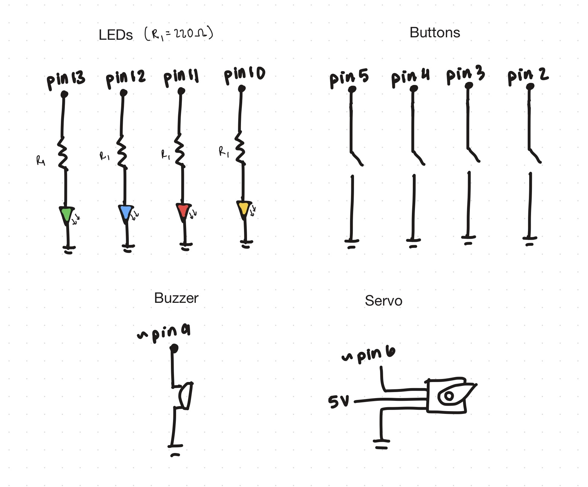
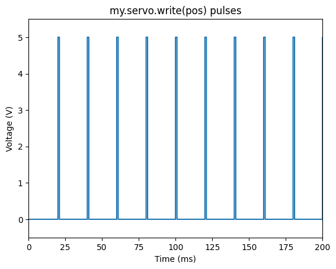
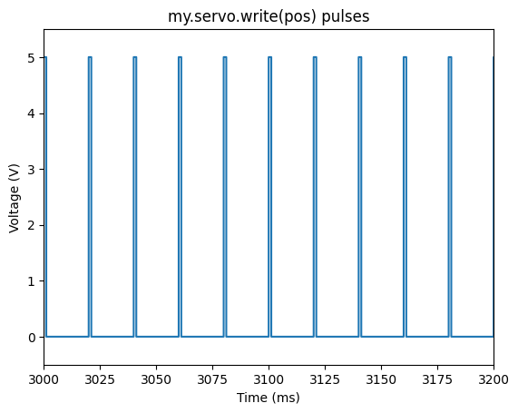
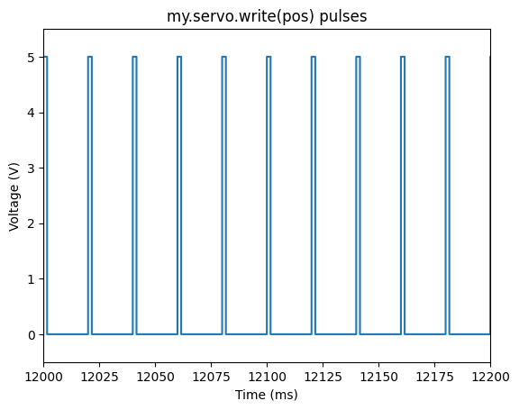
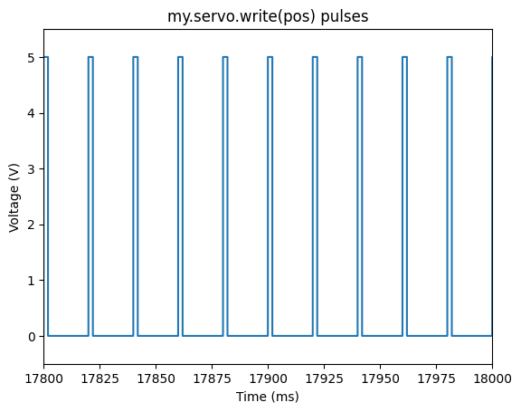

Schematic

Buttons on pins 2–5 use internal pull-up resistors to detect presses (LOW when pressed). LEDs on pins 10–13 are connected with 220Ω resistors.
Resistor calculation: Each LED has a forward voltage of ~2V and a desired current of 20 mA. Using Ohm’s law:
- Resistance = (Vsource − VLED) / I
- R = (5V − 2V) / 0.02A
- R = 3 / 0.02
- R = 150 Ω
The buzzer on pin 9 plays musical notes (C, E, G, high C) corresponding to each button, and the servo on pin 6 moves to angles of 30°, 60°, 90°, or 120°.
Circuit

Each button input triggers an LED, a buzzer note, and servo movement. Resistors protect the LEDs and INPUT_PULLUP prevents floating pins on the buttons.
Code
/*
HCDE 438 - Musical Touchpad with LEDs, Servo, and Buzzer
Anita Daniel
*/
#include // control servo motor
#include // to prevent false triggering due to button bounce
/*
Pins
*/
const int buttonPins[4] = {2, 3, 4, 5}; // buttons
const int ledPins[4] = {10, 11, 12, 13}; // LEDs
const int buzzerPin = 9; // buzzer
const int servoPin = 6; // servo
const int servoAngles[4] = {30, 60, 90, 120}; // servo angles for each button
const int notes[4] = {262, 330, 392, 523}; // buzzer frequencies: C, E, G, high C
Servo myServo; // servo object
Bounce debouncers[4]; // debounce object for each button
/*
Setup
*/
void setup() {
Serial.begin(9600); // initialize serial for debugging
// initialize buttons with pull-ups and attach debouncers
for (int i = 0; i < 4; i++) {
pinMode(buttonPins[i], INPUT_PULLUP); // pull-up to avoid floating
debouncers[i].attach(buttonPins[i]); // attach button to debouncer
debouncers[i].interval(25); // debounce interval in ms
}
// initialize LEDs
for (int i = 0; i < 4; i++) {
pinMode(ledPins[i], OUTPUT); // set LED pins as outputs
digitalWrite(ledPins[i], LOW); // start with LEDs off
}
// initialize buzzer
pinMode(buzzerPin, OUTPUT); // set buzzer as output
// initialize servo
myServo.attach(servoPin); // attach servo to pin
myServo.write(0); // start servo at 0 degrees
}
/*
Loop
*/
void loop() {
// update all debouncers to read button state
for (int i = 0; i < 4; i++) {
debouncers[i].update(); // update button state
// Check if button was just pressed
if (debouncers[i].fell()) { // triggered when pressed
Serial.print("Button ");
Serial.print(i + 1);
Serial.println(" pressed"); // debug print
digitalWrite(ledPins[i], HIGH); // turn on corresponding LED
tone(buzzerPin, notes[i], 300); // play note on buzzer
myServo.write(servoAngles[i]); // move servo to angle
}
// check if button was just released
if (debouncers[i].rose()) { // triggered when released
digitalWrite(ledPins[i], LOW); // turn off corresponding LED
}
}
delay(10); // small delay
}
Circuit Operation
Video Link: https://drive.google.com/file/d/1giQJOQthkWXdfw8bpH4j4CBUJ7kaBggi/view?usp=sharing
When each button is pressed, (1) the corresponding LED lights up - providing visual feedback, (2) the buzzer plays a specific note - providing auditory feedback, and (3) the servo maps to an angle - providing mechanical feedback.
Button Mapping
| Button | LED Pin | Note (Hz) | Servo Angle |
|---|---|---|---|
| 1 | 10 | 262 | 30° |
| 2 | 11 | 330 | 60° |
| 3 | 12 | 392 | 90° |
| 4 | 13 | 523 | 120° |
Questions
1: Say you are using a servo motor you attach to pin 9. In your loop() you have the following code:
void loop() {
for (pos = 0; pos <= 180; pos += 1) {
myservo.write(pos);
delay(100);
}
}
void loop() {
for (pos = 0; pos <= 180; pos += 1) {
myservo.write(pos);
delay(100);
}
}




The voltage at pin 9 is a PWM signal that goes between 0 V and 5 V. As the loop increments pos from 0° to 180°, the pulse width increases linearly from 1 ms to 2 ms, so the average voltage rises slowly over time. Each step lasts 100 ms due to the delay.
2: Your input device is slightly broken, leading it to give us an erroneous reading 1% of the time. How can we address this? Answer in (pseudo)code.
To fix this, we compare the current reading to the previous valid reading and a maximum threshold.
If it jumps too far or exceeds the bounds, we replace it with the previous value, preventing spikes from affecting the data.
const int MAX_BOUND = 1023; // maximum sensor value
int prevSensorValue = 0; // stores last valid reading
int sensorValue = analogRead(sensorPin);
if ((sensorValue > 1.3 * prevSensorValue) || (sensorValue > MAX_BOUND)) {
// reading is erroneous, use previous value
sensorValue = prevSensorValue;
} else {
prevSensorValue = sensorValue; // valid reading, update previous
}
3: Your input device is slightly noisy, leading the measurement to randomly deviate from the true measurement up or down by 10%. How can we address this? Answer in (pseudo)code.
We can smooth the data using a sliding window average. We keep the last 10 readings, compute their average, and use this as the current value to reduce noise.
const int WINDOW_SIZE = 10;
int readings[WINDOW_SIZE]; // circular buffer for last 10 readings
int index = 0;
int sum = 0;
int sensorValue = analogRead(sensorPin);
// remove oldest value from sum
sum -= readings[index];
// store new reading
readings[index] = sensorValue;
// add new value to sum
sum += readings[index];
// increment index, wrap around
index = (index + 1) % WINDOW_SIZE;
// calculate smoothed value
int smoothedValue = sum / WINDOW_SIZE;
4: Did you use AI tools in completing this assignment?
I used AI tools to brainstorm additional libraries to include in this project and to think through integration strategies for Bounce2. Specifically, I discussed which library features could improve the project and how to implement them without introducing conflicts. Using AI helped me refine my design approach to make sure the libraries worked together correctly.